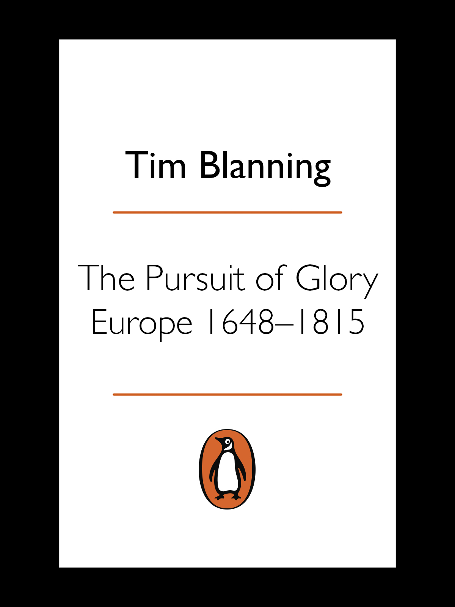

READING & IA — 企鹅欧洲史 · PENGUIN EUROPE

本页仅收录官方预览 / 授权试读与图书馆记录等可核验出处，不提供未经授权的全文镜像。全文以正式出版与馆藏借阅为准。This page links only verifiable sources — official previews, licensed samples, and library/OverDrive records. No unlicensed full-text mirrors. The complete original is obtained via the published edition or library loan.
✓
章旨 · Chapter argument：Introduction —— 『五场革命』框架一次性立起：科学、政治、农业、工业、(第二次) 宗教。Blanning 明确说没有任何单一线索足以解释现代欧洲的造就 —— 这是全书对任何目的论的拒绝。Argument: Introduction —— 『五场革命』框架一次性立起：科学、政治、农业、工业、(第二次) 宗教。Blanning 明确说没有任何单一线索足以解释现代欧洲的造就 —— 这是全书对任何目的论的拒绝。
论证展开 · Argument development：旧制度晚期的悖论 (1648 的战争创伤 + 1815 的自由前夜) → 五场革命的定义与时间错位 (科学 1600s → 政治 1776/89 → 农业 1730s → 工业 1760s → 第二次宗教 1730s-1790s) → 荣耀作为核心范畴的引入 → 全书四部结构说明。Development: 旧制度晚期的悖论 (1648 的战争创伤 + 1815 的自由前夜) → 五场革命的定义与时间错位 (科学 1600s → 政治 1776/89 → 农业 1730s → 工业 1760s → 第二次宗教 1730s-1790s) → 荣耀作为核心范畴的引入 → 全书四部结构说明。
关键人物 · 事件 · 年代 · 地名：跨书人物预出场：Leibniz、Newton (稍后)、Voltaire、Frederick II、Louis XIV、Peter I、Joseph II、Mirabeau、Napoleon；Blanning 自己的学术自传 (1986 Joseph II、1989 FRW)Key figures · events · dates · places: 跨书人物预出场：Leibniz、Newton (稍后)、Voltaire、Frederick II、Louis XIV、Peter I、Joseph II、Mirabeau、Napoleon；Blanning 自己的学术自传 (1986 Joseph II、1989 FRW)
材料与方法 · Evidence base：二手文献综述为主 —— 与 Hobsbawm、Stone、Porter、Outram、Clark 诸家对话Evidence: 二手文献综述为主 —— 与 Hobsbawm、Stone、Porter、Outram、Clark 诸家对话
章际关系 · Relation to neighbouring chapters：为全书定框架 —— 之后每一部都是这场『五场叠加』的一个侧面。Chapter link: 为全书定框架 —— 之后每一部都是这场『五场叠加』的一个侧面。
✓
src EPUB TOC extracted from original book
章旨 · Chapter argument：第一部分 Life and Death (人口与日常) —— 物质生活的深处：寿命、饮食、疾病、婚育、死亡曲线。Blanning 把启蒙拉回身体，反对纯粹观念史。这一部是全书最『总体史』的部分 —— 年鉴学派的方法在英语通史里的少见应用。Argument: 第一部分 Life and Death (人口与日常) —— 物质生活的深处：寿命、饮食、疾病、婚育、死亡曲线。Blanning 把启蒙拉回身体，反对纯粹观念史。这一部是全书最『总体史』的部分 —— 年鉴学派的方法在英语通史里的少见应用。
论证展开 · Argument development：1648 前后欧洲的人口 (约 9000 万 → 1800 约 1.4 亿) → 农业与饮食结构 (黑面包、啤酒、季节性饥饿) → 疾病谱 (鼠疫末次马赛 1720、天花、疟疾、产褥热) → 婚育模式 (西北欧晚婚核心家庭 vs 东欧早婚主干家庭，Hajnal 命题) → 死亡率与预期寿命 (25-35 岁之间) → 人口曲线与 18 世纪后半叶的『人口爆炸』。Development: 1648 前后欧洲的人口 (约 9000 万 → 1800 约 1.4 亿) → 农业与饮食结构 (黑面包、啤酒、季节性饥饿) → 疾病谱 (鼠疫末次马赛 1720、天花、疟疾、产褥热) → 婚育模式 (西北欧晚婚核心家庭 vs 东欧早婚主干家庭，Hajnal 命题) → 死亡率与预期寿命 (25-35 岁之间) → 人口曲线与 18 世纪后半叶的『人口爆炸』。
关键人物 · 事件 · 年代 · 地名：Gregory King (1648-1712，人口估算)、Richard Doughty、Arthur Young、Thomas Malthus (作为收尾)、Jacques Dupâquier、E. A. Wrigley、Roger Schofield、Laslett (Cambridge Group)、Hajnal、Cipolla、McKeownKey figures · events · dates · places: Gregory King (1648-1712，人口估算)、Richard Doughty、Arthur Young、Thomas Malthus (作为收尾)、Jacques Dupâquier、E. A. Wrigley、Roger Schofield、Laslett (Cambridge Group)、Hajnal、Cipolla、McKeown
材料与方法 · Evidence base：教区登记 (England、France、Sweden、Geneva)、旅行家笔记、家计簿 (Furness 家族、Herald 家族)、军队体检、墓地考古、疾病记录 (天花接种与早期疫苗)、农业调查 (Arthur Young)Evidence: 教区登记 (England、France、Sweden、Geneva)、旅行家笔记、家计簿 (Furness 家族、Herald 家族)、军队体检、墓地考古、疾病记录 (天花接种与早期疫苗)、农业调查 (Arthur Young)
章际关系 · Relation to neighbouring chapters：为第二部分 (Power) 铺路 —— 只有理解身体的物质局限，才能理解荣耀作为非物质追求的文化重量。Chapter link: 为第二部分 (Power) 铺路 —— 只有理解身体的物质局限，才能理解荣耀作为非物质追求的文化重量。
✓
src EPUB TOC extracted from original book
章旨 · Chapter argument：第二部分 Power (政治-制度) —— 绝对主义 vs 立宪的欧洲政治地图。凡尔赛的礼仪、圣彼得堡的西化、勃兰登堡的军事国家 —— 荣耀作为政治资本被制度化。Blanning 处理这一段时最像传统政治史家，但用文化符号贯穿。Argument: 第二部分 Power (政治-制度) —— 绝对主义 vs 立宪的欧洲政治地图。凡尔赛的礼仪、圣彼得堡的西化、勃兰登堡的军事国家 —— 荣耀作为政治资本被制度化。Blanning 处理这一段时最像传统政治史家，但用文化符号贯穿。
论证展开 · Argument development：绝对主义的三种变体：法国 (Louis XIV → XV → XVI)、瑞典-俄罗斯、普鲁士-奥地利 vs 立宪：英格兰 (1688 光荣革命)、荷兰共和国、威尼斯、瑞士州、波兰的『贵族民主』与 1791 五三宪法 → 宫廷作为政府机构 (凡尔赛的礼仪、Whitehall、Sanssouci、圣彼得堡、维也纳) → 军队、外交、财政的国家能力建构 → 荣耀作为外交资本 (War of Spanish Succession、Austrian Succession、Seven Years' War 的荣誉起因) → 普鲁士的腓特烈·威廉一世与腓特烈大帝的『士兵王 vs 哲学王』双相。Development: 绝对主义的三种变体：法国 (Louis XIV → XV → XVI)、瑞典-俄罗斯、普鲁士-奥地利 vs 立宪：英格兰 (1688 光荣革命)、荷兰共和国、威尼斯、瑞士州、波兰的『贵族民主』与 1791 五三宪法 → 宫廷作为政府机构 (凡尔赛的礼仪、Whitehall、Sanssouci、圣彼得堡、维也纳) → 军队、外交、财政的国家能力建构 → 荣耀作为外交资本 (War of Spanish Succession、Austrian Succession、Seven Years' War 的荣誉起因) → 普鲁士的腓特烈·威廉一世与腓特烈大帝的『士兵王 vs 哲学王』双相。
关键人物 · 事件 · 年代 · 地名：Louis XIV、Mazarin、Colbert、Louvois、Vauban、Fénelon、Bossuet、Saint-Simon (作为回忆录作者)、Peter I、Catherine II、Frederick William I、Frederick II、Leibniz (作为勃兰登堡史家)、Maria Theresa、Kaunitz、Ferdinand of Brunswick、Marshall SaxeKey figures · events · dates · places: Louis XIV、Mazarin、Colbert、Louvois、Vauban、Fénelon、Bossuet、Saint-Simon (作为回忆录作者)、Peter I、Catherine II、Frederick William I、Frederick II、Leibniz (作为勃兰登堡史家)、Maria Theresa、Kaunitz、Ferdinand of Brunswick、Marshall Saxe
材料与方法 · Evidence base：Saint-Simon《回忆录》、凡尔赛官方公报 (Mercure galissant)、外交文书 (French、Austrian、Prussian、Russian archives)、军队名册、宫廷礼仪手册 (étiquette 诸版)、Louis XIV《Memoires》、Frederick II《我们时代的历史》《军事遗嘱》Evidence: Saint-Simon《回忆录》、凡尔赛官方公报 (Mercure galissant)、外交文书 (French、Austrian、Prussian、Russian archives)、军队名册、宫廷礼仪手册 (étiquette 诸版)、Louis XIV《Memoires》、Frederick II《我们时代的历史》《军事遗嘱》
章际关系 · Relation to neighbouring chapters：为第三部分 (Religion & Culture) 提供政治框架 —— 宫廷既是权力机构也是文化赞助人。Chapter link: 为第三部分 (Religion & Culture) 提供政治框架 —— 宫廷既是权力机构也是文化赞助人。
✓
src EPUB TOC extracted from original book
章旨 · Chapter argument：第三部分 Religion and Culture (全书最原创部分) —— De-Christianization + 音乐 (Mozart/Haydn) + 品味 + 公共领域。Blanning 用文化史与音乐史重写启蒙，他自己在 1986-2011 三十年的音乐史研究在此充分发挥。Argument: 第三部分 Religion and Culture (全书最原创部分) —— De-Christianization + 音乐 (Mozart/Haydn) + 品味 + 公共领域。Blanning 用文化史与音乐史重写启蒙，他自己在 1986-2011 三十年的音乐史研究在此充分发挥。
论证展开 · Argument development：Ch.1 去基督教化 (Vovelle 普罗旺斯命题、Boutry 里尔命题、Carter 英国命题) —— 教友实践率下降的时间与空间 → Ch.2 宗教的多样化：哈西德主义 (Baal Shem Tov)、Awakenings (Wesley、Zinzendorf、Edwards)、德意志虔敬派 (Spener、Francke)、耶稣会取缔 (1773) → Ch.3 艺术市场与品味 (Diderot 沙龙评论、Reynolds、Gainsborough、David、Mozart 与 Haydn 的公共音乐会、伦敦 Vauxhall、巴黎 Concert Spirituel) → Ch.4 文学与阅读革命 (Richardson、Fielding、Marivaux、Goldoni、Klopstock、Goethe、Schiller、Burney、Radiер性 novels) → Ch.5 公共领域的兴起 (Habermas 命题的欧洲史改写 —— 咖啡馆、共济会、期刊、沙龙、Reading societies)。Development: Ch.1 去基督教化 (Vovelle 普罗旺斯命题、Boutry 里尔命题、Carter 英国命题) —— 教友实践率下降的时间与空间 → Ch.2 宗教的多样化：哈西德主义 (Baal Shem Tov)、Awakenings (Wesley、Zinzendorf、Edwards)、德意志虔敬派 (Spener、Francke)、耶稣会取缔 (1773) → Ch.3 艺术市场与品味 (Diderot 沙龙评论、Reynolds、Gainsborough、David、Mozart 与 Haydn 的公共音乐会、伦敦 Vauxhall、巴黎 Concert Spirituel) → Ch.4 文学与阅读革命 (Richardson、Fielding、Marivaux、Goldoni、Klopstock、Goethe、Schiller、Burney、Radiер性 novels) → Ch.5 公共领域的兴起 (Habermas 命题的欧洲史改写 —— 咖啡馆、共济会、期刊、沙龙、Reading societies)。
关键人物 · 事件 · 年代 · 地名：Voltaire、Diderot、d'Alembert、Rousseau、Hume、Adam Smith、Kant、Lessing、Herder、Goethe、Schiller、Beaumarchais、Johnson、Reynolds、Gainsborough、David、Mozart、Haydn、Gluck、Bach family (C. P. E.、J. C.)、Samuel Richardson、Henry Fielding、Laurence Sterne、Frances Burney、Marivaux、Goldoni、Baal Shem Tov、John Wesley、Zinzendorf、Edwards、Spener、FranckeKey figures · events · dates · places: Voltaire、Diderot、d'Alembert、Rousseau、Hume、Adam Smith、Kant、Lessing、Herder、Goethe、Schiller、Beaumarchais、Johnson、Reynolds、Gainsborough、David、Mozart、Haydn、Gluck、Bach family (C. P. E.、J. C.)、Samuel Richardson、Henry Fielding、Laurence Sterne、Frances Burney、Marivaux、Goldoni、Baal Shem Tov、John Wesley、Zinzendorf、Edwards、Spener、Francke
材料与方法 · Evidence base：《百科全书》(1751-72)、Diderot 沙龙评论、Burney 小说、Goethe《诗与真》、Mozart 书信全集、Haydn 与 Esterházy 契约、共济会名册、期刊 (Spectator、Tatler、Mercier《Paris》)、沙龙记录 (Geoffrin、Lespinasse、Bui ffon)Evidence: 《百科全书》(1751-72)、Diderot 沙龙评论、Burney 小说、Goethe《诗与真》、Mozart 书信全集、Haydn 与 Esterházy 契约、共济会名册、期刊 (Spectator、Tatler、Mercier《Paris》)、沙龙记录 (Geoffrin、Lespinasse、Bui ffon)
章际关系 · Relation to neighbouring chapters：为第四部分 (War & Peace) 铺路 —— 公共领域的形成让革命成为可能。Chapter link: 为第四部分 (War & Peace) 铺路 —— 公共领域的形成让革命成为可能。
✓
src EPUB TOC extracted from original book
章旨 · Chapter argument：第四部分 War and Peace (1780-1815) —— 法国革命战争-拿破仑战争-维也纳体系作为同一场『荣耀危机』的三段。Blanning 处理 1789-1815 用他自己 1989 年《The French Revolutionary Wars》的框架 —— 不是意识形态战争而是国家-荣耀体系的重组。Argument: 第四部分 War and Peace (1780-1815) —— 法国革命战争-拿破仑战争-维也纳体系作为同一场『荣耀危机』的三段。Blanning 处理 1789-1815 用他自己 1989 年《The French Revolutionary Wars》的框架 —— 不是意识形态战争而是国家-荣耀体系的重组。
论证展开 · Argument development：美国革命的欧洲效应 (1776-1783 的法国财政危机) → 法国革命 (1789 → 1792 共和国 → 1793 恐怖 → 1794 Thermidor → 1795 Directory) → 革命战争 (Valmy 1792、Jemappes、Fleurus、Vendée、莱茵) → 意大利与埃及战役 (Bonaparte 1796-1799) → 雾月政变 (1799) 与执政官 → 亚眠和约 (1802) 与第三次反法同盟 (1803-1806) → 奥斯特里茨 (1805)、耶拿-奥尔施泰特 (1806)、弗里德兰 (1807)、大陆封锁 → 半岛战争 (1808-1814)、瓦格拉姆 (1809)、对俄战争 (1812)、莱比锡民族会战 (1813)、法国战役与退位 (1814)、维也纳会议 (1814-1815)、百日王朝与滑铁卢 (1815.6.18)。Development: 美国革命的欧洲效应 (1776-1783 的法国财政危机) → 法国革命 (1789 → 1792 共和国 → 1793 恐怖 → 1794 Thermidor → 1795 Directory) → 革命战争 (Valmy 1792、Jemappes、Fleurus、Vendée、莱茵) → 意大利与埃及战役 (Bonaparte 1796-1799) → 雾月政变 (1799) 与执政官 → 亚眠和约 (1802) 与第三次反法同盟 (1803-1806) → 奥斯特里茨 (1805)、耶拿-奥尔施泰特 (1806)、弗里德兰 (1807)、大陆封锁 → 半岛战争 (1808-1814)、瓦格拉姆 (1809)、对俄战争 (1812)、莱比锡民族会战 (1813)、法国战役与退位 (1814)、维也纳会议 (1814-1815)、百日王朝与滑铁卢 (1815.6.18)。
关键人物 · 事件 · 年代 · 地名：Louis XVI、Marie Antoinette、Mirabeau、 Lafayette、Robespierre、Danton、Saint-Just、Hébert、Desmoulins、Sieyès、Napoleon、Josephine、Marie Louise、Murat、Berthier、Masséna、Soult、Davout、Ney、Wellington、Nelson、Kutuzov、Alexander I、Frederick William III、Metternich、Castlereagh、Talleyrand、FouchéKey figures · events · dates · places: Louis XVI、Marie Antoinette、Mirabeau、 Lafayette、Robespierre、Danton、Saint-Just、Hébert、Desmoulins、Sieyès、Napoleon、Josephine、Marie Louise、Murat、Berthier、Masséna、Soult、Davout、Ney、Wellington、Nelson、Kutuzov、Alexander I、Frederick William III、Metternich、Castlereagh、Talleyrand、Fouché
材料与方法 · Evidence base：拿破仑书信全集 (Correspondance générale)、Sainte-Hélène 诸回忆录、Wellington 书信、Nelson 书信、Vienna 议会记录、French Revolutionary and Napoleonic War 诸国官方档案、同时人日记 (Galliffet、Marmont、Caulaincourt、Bourrienne、Narbonne)Evidence: 拿破仑书信全集 (Correspondance générale)、Sainte-Hélène 诸回忆录、Wellington 书信、Nelson 书信、Vienna 议会记录、French Revolutionary and Napoleonic War 诸国官方档案、同时人日记 (Galliffet、Marmont、Caulaincourt、Bourrienne、Narbonne)
章际关系 · Relation to neighbouring chapters：结语前的最后一步 —— 把 1815 处理为两百年沉积的终点而非起点。Chapter link: 结语前的最后一步 —— 把 1815 处理为两百年沉积的终点而非起点。
✓
src EPUB TOC extracted from original book
章旨 · Chapter argument：Conclusion —— 五场革命的合成。Blanning 明确说没有任何单一线索足以解释现代欧洲的造就。维也纳体系所要接手的，是一个已被五场革命彻底改写了的欧洲 —— 这是全书对任何目的论的拒绝，也是对下一卷 (Evans 1815-1914) 的过渡。Argument: Conclusion —— 五场革命的合成。Blanning 明确说没有任何单一线索足以解释现代欧洲的造就。维也纳体系所要接手的，是一个已被五场革命彻底改写了的欧洲 —— 这是全书对任何目的论的拒绝，也是对下一卷 (Evans 1815-1914) 的过渡。
论证展开 · Argument development：五场革命的时间重叠与因果网络 (科学 → 农业 → 工业 → 政治 → 宗教，但每一场都在其他国家以不同顺序进入) → 荣耀作为跨场域资本的功能 → 1815 之后维也纳体系面对的新欧洲 → 与 Blanning 自己的《Culture of Power and Power of Culture》(2002)、《Triumph of Music》(2011)、《Romantic Enigma》(2015) 的呼应。Development: 五场革命的时间重叠与因果网络 (科学 → 农业 → 工业 → 政治 → 宗教，但每一场都在其他国家以不同顺序进入) → 荣耀作为跨场域资本的功能 → 1815 之后维也纳体系面对的新欧洲 → 与 Blanning 自己的《Culture of Power and Power of Culture》(2002)、《Triumph of Music》(2011)、《Romantic Enigma》(2015) 的呼应。
关键人物 · 事件 · 年代 · 地名：跨书人物在结语中的再出场 —— Metternich、Castlereagh、Talleyrand、Humboldt、Wilhelm、Goethe (作为 1815 后的老者)、Beethoven (作为 1815 后的音乐家)Key figures · events · dates · places: 跨书人物在结语中的再出场 —— Metternich、Castlereagh、Talleyrand、Humboldt、Wilhelm、Goethe (作为 1815 后的老者)、Beethoven (作为 1815 后的音乐家)
材料与方法 · Evidence base：维也纳会议决议、Rees《Cyclopaedia》(1819)、Chambers《Encyclopaedia》(1860 回望 1815)Evidence: 维也纳会议决议、Rees《Cyclopaedia》(1819)、Chambers《Encyclopaedia》(1860 回望 1815)
章际关系 · Relation to neighbouring chapters：与下一卷直接衔接 —— Evans《The Pursuit of Power》(1815-1914) 从这里起步。Chapter link: 与下一卷直接衔接 —— Evans《The Pursuit of Power》(1815-1914) 从这里起步。
✓
src EPUB TOC extracted from original book
《荣耀的追求：塑造现代欧洲的五大革命 1648–1815》 · 时段链（数字为顺序）The Pursuit of Glory: The Five Revolutions That Made Modern Europe 1648–1815 · the chronological chain
《荣耀的追求：塑造现代欧洲的五大革命 1648–1815》 · 人物关系（虚点线=连接）The Pursuit of Glory: The Five Revolutions That Made Modern Europe 1648–1815 · character relations (dotted = link)
| ID | 人物name | 阵营/组group | 角色role | 把握conf |
|---|---|---|---|---|
| k01 | Louis XIV · 路易十四 | 凡尔赛 | 1638–1715，绝对主义的身体——凡尔赛的荣耀与财政的双刃 Versailles — 1638–1715，绝对主义的身体 | ✓ |
| k02 | Peter the Great · 彼得大帝 | 莫斯科-圣彼得堡 | 1672–1725，俄罗斯加入欧洲国家体系的关键君主 Muscovy-St. Petersburg — 1672–1725，俄罗斯加入欧洲国家体系的关键君主 | ✓ |
| k03 | Voltaire · 伏尔泰 | 巴黎-凡尔赛-柏林 | 1694–1778，启蒙运动的公共知识分子原型 Paris-Versailles-Berlin — 1694–1778，启蒙运动的公共知识分子原型 | ✓ |
| k04 | Wolfgang Amadeus Mozart · 莫扎特 | 萨尔茨堡-维也纳 | 1756–1791，音乐从宫廷到公共音乐厅的社会转折 Salzburg-Vienna — 1756–1791，音乐从宫廷到公共音乐厅的社会转折 | ✓ |
| k05 | Napoleon Bonaparte · 拿破仑·波拿巴 | 法兰西-欧陆 | 1769–1821，革命的完成者与欧洲旧秩序的终结者 France-Europe — 1769–1821，革命的完成者与欧洲旧秩序的终结者 | ✓ |
通读结论Overall verdict
『荣耀』作为可分析的资本形式Glory as analyzable capital
第三部『宗教与文化』是全书最原创部分Part III is the book's original core
与 Habermas 的隐性对话Implicit dialogue with Habermas
『De-Christianization』命题的争议性The contested de-Christianisation thesis
多专题 × 多地域的矩阵式叙述——以比较代替编年
Matrix narrative (multi-topic × multi-region) — comparison replacing pure chronology
主题化四部结构 —— 生-死 / 权力 / 宗教-文化 / 战争-和平 —— 每部内含跨地域比较。
Thematic 4-part structure with cross-territory comparisons inside each part.
Blanning 强调「荣耀」作为旧制度晚期的政治资本 —— 音乐史-艺术史-宫廷史的社会史融合。
'Glory' as political capital — merges music-, art-, and court-history.
大量使用同时人日记、书信、旅行记 —— 让 18 世纪欧洲自己叙述。
Heavy use of contemporary diaries, letters, travel writing.
把「公众舆论的兴起」当作可与战争、经济并列的革命性力量：以报刊、阅读公众、沙龙与公共领域为贯穿线索，将文化史提升为解释现代欧洲形成的独立变量。
The rise of public opinion is treated as a revolutionary force alongside war and economy: press, reading public, salon and public sphere run as a through-line, elevating cultural history into an independent variable in explaining modern Europe's formation.
| 作品work | 作者author | 年 | 关系relation | 一句理由why | 轴axis | 把握conf |
|---|
| 主张claim | 来源source | conf |
|---|---|---|
| First ed. Viking/Allen Lane 2000; Penguin pb rev. 2013; ISBN 9780141010923 | penguin.co.uk | ✓ |